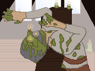

Temple of Candles
by dadhoc
The door slammed against its frame behind me, cutting off the rain outside. I could still hear the water hammering down on the ground and the stones outside, like the heavy tears of a miserable God, and the pitter-patter of the rain droplets falling from the steel plates of my armour.
I found myself in a temple of some sort - it was dark, but streaks of moonlight broke in through the cracks on the walls, and the dusty stained-glass windows. Whatever holy ghost once inhabited these halls hadn’t seen worship in a long time. I was alone, surrounded by still air and silence, and yet I didn’t feel alone. In the back of my mind, somewhere deep within my soul, I felt uneasy.
This was hardly a new feeling for me, but it was one I would never, in all my years, grow accustomed to. There was something near, something evil. I needed shelter, however, and with the rain outside, these accursed walls would have to do.
My sight was better adjusted to the lighting, now, and I began to notice the details around me. The stained glass was fairly simplistic; none of the windows seemed to depict any stories, which made me consider this may have once been a place of prayer for a smaller God. What caught my eye, however, were the statues that decorated the temple. They were made to resemble humans, or some other creature made in our image, but they were, at the same time, completely unlike any I had come across before.
These statues were not posed as though in prayer - a few of them stood tall, but the majority of them were fallen, toppled, or otherwise grounded. They all showed visible strain, pulling themselves up from the ground and struggling to stand. Their heads were tilted upwards, as though seeking solace in the gaze of an angry deity; their faces, however, were covered in multiple thick layers of wax, molten and hardened again. From their eyes rose candlesticks, the wicks charred from regular use.
From where I stood, they were little more than shades in the darkness, and I felt it unwise to approach them. I travelled light, and had little more than a tinderbox on me, but decided against lighting any of the candles.
I began walking towards the altar, in the far end of the temple. It was difficult to keep track of all of the statues, but it appeared for a moment that they, too, were moving, in the edges of my sight. Suddenly, I found myself face to face with one of these statues. I hadn’t noticed it before, as it stood in a spot not lit by the moon’s gaze; bizarrely, though, it stood right in the middle of the corridor.
It looked as though frozen in the act of walking. Its legs - or rather her legs, I should say, as the subject was distinctly feminine - were twisted around each other, and her arms were similarly wrapped around her torso. Her hands clutched onto her robe, holding in an immeasurable pain as though it were her own guts. The amount of detail on this statue was astonishing, almost lifelike. The fabric of her robe was cheap, tattered and worn by agents of time, but visibly real - real enough to feed the moths, at the very least.
My attention was completely held by this statue, so much so that I almost failed to notice the sound of fire behind my back. A soft whisper breaking through the darkness to greet me, followed by several more. I turned to see tiny embers in the distance, floating in the dark in pairs. These were the candles donned by the other statues, I realized, though what caused them to come alive, I may never know. The rain outside, as if startled by the candles, grew much heavier.
A sharp, muted breath came from my scabbard, and my blade was soon drawn. I called out into the darkness, but it had nothing to tell me. I could hear more and more wicks coming ablaze, one after the other. The embers stood for a moment, and then they moved. No longer hidden, the candles swayed from side to side, their numbers far beyond measure, approaching me.
The statues were still mostly shrouded, but, through the faint glow of the flames, I could see their jagged movements. The tip of my blade hopped from one figure to the next, like a compass seeking the true North. They were hard to track; they twitched in several directions at once, being moved by the broken spasms of their limbs, moreso than moving in a conscious effort. Those that lay along the floor didn’t, or rather couldn’t, stand up, and instead shuffled on their arms and legs like the limbs of misshapen animals. They were like puppets, tossed and dragged angrily in my direction, protecting their odd stage from the foreign presence I represented. I was quickly overwhelmed by their numbers, surrounded but as of yet unscathed. I knew now that these were not statues, but I knew not whether they were men or beasts. To stand and fight would have been foolish, and the door I had come in through was swarmed with these creatures.
I looked to the altar, seeing in it not the unholy light these things might have known, but rather a higher ground to fight from. Tackling the nearest two with my shoulder, I drove my sword into one of them, piercing its flesh with steel. The sound the creature made was inhuman, a loud screech as sharp as the edge of my weapon, muffled only by the buildup of wax over its mouth. Whatever these creatures were, they could bleed, and in that moment, little else mattered. I pushed the corpse off my sword, swinging it back to meet another foe ahead.
I couldn’t have known the true length of this corridor from sight alone, but carving through it with sweat and steel gave me a good idea. Finally, I reached the altar. A small wooden podium faced the corridor; I could only imagine the arcane sermons that were once spoken from this altar, echoing through the corridor. Maybe the audience had once stood amongst the statues, or maybe they were one and the same. I had but a moment to breathe, and looking about me, I saw a crack in the wooden floor. The statues approached quick, dripping wax and blood in their wake; I had to think fast.
Finding myself with no other option, I wedged my sword into the slot, forcing open a trapdoor. More light, as if coming from dozens of lit torches, greeted me from below. I looked around one more time, seeing my assailants move faster now, and dove in. I dropped into the catacomb feet first, landing with a hard blow. The trapdoor flung shut above me, and a strong wind blew from the end of the corridor, snuffing the flames along its path. There was a loud whistle as the wind died off.
Then, darkness.
-=x=-=x=-=x=-=x=-=x=-=x=-=x=-=x=-=x=-=x=-=x=-=x=-=x=-=x=-=x=-=x=-=x=-=x=-=x=-
Temple_Of_Candles.txt

This website, and the works herein
contained, © 2022 - 2024 by dadhoc are
licensed under CC BY-NC-SA 4.0